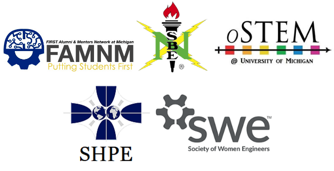

Engineering Student Organization Diversity Mixer
5-9 PM, Thursday, September 21st
North Campus Grove
FAMNM, NSBE, oSTEM, SHPE, and SWE are hosting our second annual mixer to have fun and get to know those within our diverse engineering community. Food will be provided!
Sponsored by: